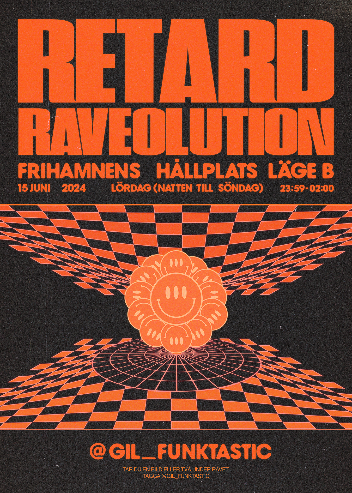
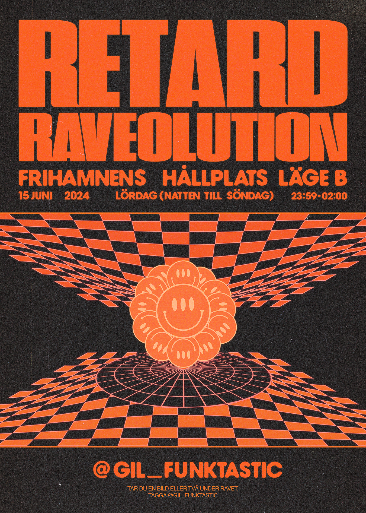

GIL
Anders Westgerd
Caroline Brautigam
Spöket
Tobias Müller
Hampus Corneliusson
Lukas Kågström
Victor Vennerström
Zacharias Hingström
Brief:
Skapa PR och opinion för funktionsfrågor i Göteborg med målet att få lokal och nationell media att uppmärksamma frågor kring tillgänglighet och bemötande.
Insikt:
Som rullstolsburen når du inte Ringön från spårvagnshållplatsen Frihamnen.
Idé:
Ett rave på Frihamnen för de som inte kan ta sig därifrån.
Gil har gett Spöket i uppdrag att skapa PR och opinion för funktionsfrågor i Göteborg, med målet att få lokal och nationell media att uppmärksamma frågor kring tillgänglighet och bemötande.
Ringön är välkänt för sina många svartklubbar, kulturfestivaler, konstkollektiv, restauranger, bryggerier… Ah, du förstår. Det är ett område som betyder mycket för Göteborgs sociala och kulturella liv. Tråkigt för dig som är rullstolsburen, då områdets närmsta spårvagnshållplats, Frihamnen, är allt annat än tillgänglig. När du väl har tagit dig av spårvagnen möts du som rullstolsburen av en lång, brant trappa, och om du vill ta dig vidare är det enda du kan göra att vänta på nästa vagn.
Vi anordnade därför en demonstration vid Frihamnens spårvagnshållplats för alla de som inte kan ta sig vidare. En fest där vi under en lördagsnatt raveade för att få staden att stanna upp och dansa.


 
